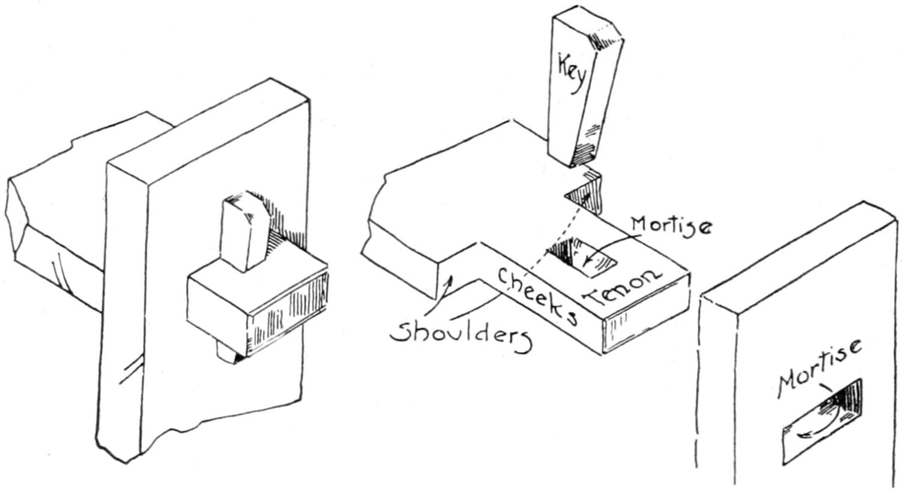

Ira S. Griffith: el maestro de taller que escribió para enseñar
Ira Samuel Griffith · Peoria, 1908 · En dominio público
En 1908, un docente de Illinois publicó un manual de carpintería con una idea simple: el oficio se aprende mejor cuando se lo estudia con la misma seriedad que la matemática.
Griffith había enseñado materias académicas y carpintería, y de esa doble experiencia sacó una convicción: el taller necesita su propio libro de texto, uno que se estudie antes de tocar la herramienta. No quiso atarlo a un juego fijo de modelos. Escribió, en cambio, sobre los procedimientos: cómo se traza, cómo se corta, cómo se arma. Así el libro servía en la escuela primaria, en la secundaria o en la universidad.
En la introducción aparece la idea que más nos tocó. Lo que el aprendiz produce en la madera vale, dice, pero hay resultados más serios que se producen en él mismo, en los hábitos que va formando: cuidado, prolijidad, exactitud, economía de tiempo y de material, capacidad de pensar y de hacer a partir de lo pensado, honestidad y orden.
Lo que aprendimos leyéndolo
El capítulo VIII explica las uniones básicas, una por una, con instrucciones numeradas y dibujos. Una de las que más nos ayudó a entender es la espiga pasante con cuña: la espiga atraviesa la otra pieza y una cuña clavada en ella aprieta la unión, sin cola.
Lo que más nos enseñó es el método. Griffith insiste en que todas las medidas se tomen siempre desde la cara y el canto de referencia. Si se trabaja desde los otros lados, cualquier diferencia en el ancho o el espesor de las piezas se traslada a la unión; si se marca siempre desde las mismas caras, las cajas y las espigas salen exactas aunque las piezas varíen. Es una lección que, como aprendices, todavía estamos aprendiendo a cumplir.

Figura 157 de la edición de 1908: espiga, caja y cuña. Dominio público.
De su libro de 1912, Advanced Projects in Woodwork, sale el banco de piano de la lámina 16, el objeto del primer cuaderno de Técnica Clásica.
Cómo leerlo
El libro está en dominio público y no tiene traducción al castellano, hasta donde pudimos ver. Se lee mejor como lo pensó su autor: buscando el procedimiento que hace falta antes de ir al banco.
Dónde está. Project Gutenberg tiene la transcripción completa de la edición de 1908, con todas las figuras. Se lee y se descarga gratis:
Saliente rebajado en la punta de una pieza, que entra en la caja de otra para unirlas.
Caja
Hueco rectangular abierto en una pieza para recibir la espiga. Es pasante si la atraviesa, y ciega si no.
Cuña
Pieza en pendiente que se clava en una caja abierta en la espiga y aprieta la unión. Griffith también la llama llave.
Cara y canto de referencia
La cara y el canto que se cepillan primero, planos y a escuadra entre sí. Todas las medidas se toman desde ahí.
Dominio público
Obra cuyos derechos de autor vencieron: se puede reproducir, traducir y difundir, respetando el nombre del autor.
Personas
Ira Samuel Griffith (1874–1924)
Maestro de taller y autor de textos escolares de carpintería. En 1912 era profesor de Artes Manuales en el Bradley Polytechnic Institute de Peoria; más tarde fue profesor de Educación Industrial en la Universidad de Illinois. En 1920 publicó Teaching Manual and Industrial Arts, un libro para formar docentes.
Edwin Victor Lawrence
Ilustrador de la edición de 1908 de Essentials of Woodworking.